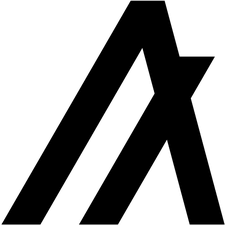

Blockchains vergeleken
Er zijn vele veschillende type Blockchains. Een fout die nog wel eens gemaakt wordt, is dat men denkt dat blockchain technologie ontstaan is bij de introductie van Bitcoin. Dit is onjuist. Blockchains waren er al veel eerder; wat de Bitcoin blockchain van diens uitvinder(s), Satoshi Nakamoto5, uniek maakte en waarom deze de bron van inspiratie zou worden voor vele andere blockchains, is dat hij twee belangrijke problemen wist op te lossen. Met de Bitcoin technologie gaf hij antwoord op de twee belangrijke vragen:
- Kan ik vertrouwen, dat het geld (de Bitcoin) echt is en niet vals?
- Kan ik er zeker van zijn dat niemand anders het geld kan claimen? Dit probleem staat bekend als het double-spend probleem.
Na de introductie van Bitcoin zijn er vele andere Blockchains verschenen, die min of meer gebasseerd zijn op Nakamoto's ideeën. Toch zijn er vele
verschillen aan te wijzen tussen deze blockchains. Wij sommen hier de meest in het oog springende verschillen op:
- Is het gebaseerd op een crypto currency (ook wel Token genoemd)? Voor sommige zakelijke transacties zijn geen crypto currencies nodig, maar bij vele is dat wel wenselijk. Het hangt dus voornamelijk af van het gebruikte (business)model.
- Is het een non-permissioned blockchain of een permissioned blockchain. Permissioned blockchains geven alleen toegang aan participanten aangewezen door een door de organisatie aangewezen beheerder. Dit type blockchains is voornamelijk geschikt voor organisaties en bedrijven waarbij het niet noodzakelijk is, dat iedereen op de blockchain aanwezig is. Dit maakt het ook veiliger. Non-permissioned blockchains zijn voor iedereen toegankelijk; voorbeelden zijn de Bitcoin en Ethereum blockchain en de IOTA tangle.
- Kunnen smart contracts of distributed applicaties gebruikt worden?
- Waarop is het consensus protocol gebaseerd?
- Is het consensus protocol snel of traag? Hoe zit het met de duurzaamheids score
- Hoe zit het met het typische
Blockchain trilemma security, schaalbaarheid en centralisatie
Hieronder volgt een tabel met een kort overzicht met de onderlinge verschillen van een paar populaire blockchains die in omloop zijn, of gaan komen.
| Bitcoin | Ethereum | Hyperledger Fabric | IOTA | Algorand | |
|---|---|---|---|---|---|
| Type Organisatie | OS6 - Consortium | OS - Consortium | OS - Linux Foundation/IBM | OS - Consortium | OS - Consortium/MIT |
| Crypto currency aanwezig | Ja |
Ja |
Nee | Ja |
Ja  |
| Transactie fees aanwezig | Ja | Ja | Nee | Nee | Ja |
| Consensus Algoritme | Proof of Work | Proof of Stake | Framework afhankelijk | Proof of Work | Pure Proof of Stake |
| Snelheid consensus algoritme | Zeer laag | Laag | Gemiddeld | Hoog | Zeer hoog |
| Bewezen betrouwbaarheid | Ja | Nee | Nee | Nee | Nee |
| Security | Laag | Laag | Redelijk | Meningen verdeeld | Hoog |
| Gevaar voor centralisatie | Zeer hoog | Hoog | Zeer hoog | Uiteindelijk laag | Zeer laag |
| Schaalbaarheid | Laag | Laag | Laag | Uiteindelijk hoog | Hoog |
| Duurzaamheid score7 | Zeer laag | Laag | Gemiddeld | Hoog | Zeer hoog |
| Smart Contracts of Dapps8 | Bijna | Ja | Ja | Bijna | Bijna |
| Smart Contract Programmeertaal | Scripting taal | Solidity | Golang, JS, Java, Python | JS, Golang, Python | Go, JS, Java |
| Permissioned | Nee | Nee | Ja | Nee | Nee/Ja9 |
| Controleerbaar | Ja | Ja | Ja | Ja | Ja |
| Inflationair | Nee | Ja | nvt | Nee | Nee |
| Immutable ledger | Ja | Ja | Ja | Ja | Ja |
| Modulair | Nee | Nee | Ja | Nee | Nee |
| Bruikbaar voor de IoT | Nee | Nee | Nee | Zeer goed | Onzeker |
5 Niemand weet wie Satoshi Nakamoto is (of zijn). De reden waarom Satoshi onbekend wil blijven is waarschijnlijk vanwege de angst gearesteerd te worden, aangezien Bitcoin buiten het reguliere
geld circuit van overheden en centrale banken verblijft -- iets wat precies de bedoeling van Bitcoin is.
6 Open Source. Een consortium van software ontwikkelaars bepaalt richting van project en de commits (veranderingen in de source code).
7 Relatief aan normaal server gebruik
8 Bij de relatief nieuwe DLT projecten zijn ontwikkelingen gaande die dit de komende tijd mogekijk maken.
9 Het netwerk bestaat uit een main network, een test network en een private network. Eerste twee zijn non-permissioned. Het private network is permissioned.